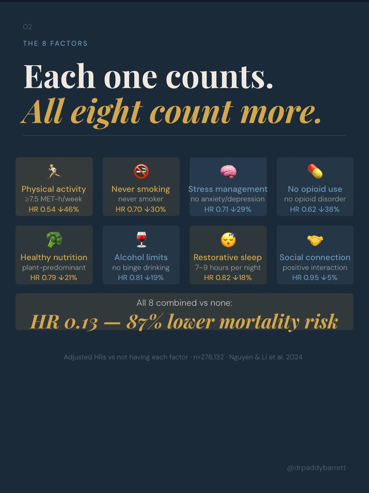

Sleep, stress and mood are easy to dismiss as "soft" topics next to cholesterol and blood pressure, but the group's posts treat them as real contributors to heart disease. The American Heart Association now lists sleep among the eight most important modifiable risk factors, and one large cohort of US veterans counted stress management and social connection among eight lifestyle factors that together tracked with far lower mortality.12
The practical picture is that poor sleep, untreated sleep apnea, chronic stress, depression and isolation tend to travel together with high blood pressure, visceral fat and inflammation. Most of what the posts offer here is observational or mechanistic, and several of the supplement studies are small or short. The admins say so repeatedly, so this summary separates what is reasonably established from what is promising but unproven.
Louis Nervegna and Gokhan Can, the group's admins, are not offering treatment advice. Where the posts discuss supplements or medications, the sensible reading is "something to discuss with your own doctor".
Why sleep, stress and mood matter for the heart
Sleep is one of the components of the American Heart Association's Life's Essential 8, the eight-part checklist for cardiovascular health: diet, activity, tobacco, sleep, weight, cholesterol, blood sugar and blood pressure. For sleep, the checklist as quoted in the group recommends 7 to 9 hours per night for most adults.3 A newer AHA statement on multidimensional sleep health argues that cardiologists should ask about more than sleep duration.1
Shared commentary on sleep duration adds that consistently sleeping fewer than seven hours is linked to hypertension, diabetes and obesity, which are themselves major drivers of heart disease.7 Lifestyle factors such as diet, physical activity, sleep, stress and alcohol are described in a post on the 2025 US blood pressure guideline as the major drivers of how common high blood pressure has become; in that summary, about 57% of men and 53% of women aged 45 to 59 are above 130/80 mmHg, rising to roughly 84% at ages 75 to 80.8 Dr Brad Stanfield's video, summarized by Gokhan, also lists sleep optimization and stress management among the steps for reaching a healthier blood pressure, alongside home monitoring, a potassium-rich low-sodium diet and exercise.9
Mood matters in the same way. Louis repeatedly describes depression and anxiety as major risk factors for cardiovascular disease, which is why he shares trials of treatments for them.101112 A JACC review shared in the group takes the broader view that heart disease and cognitive decline share drivers: chronic inflammation, insulin resistance, hypertension, dyslipidemia, oxidative stress and endothelial dysfunction. It names mental stress reduction and deep sleep among the lifestyle strategies that may address both.13 A Scientific American feature shared by Louis similarly lists depression alongside obesity, Alzheimer's disease and heart disease as conditions influenced by diet and possibly by a shared problem with cellular energy, though that is a conceptual argument without trial data.14
What the evidence in the posts shows
Big-picture lifestyle cohorts
Two large observational analyses are shared in the group.
- Life's Essential 8 in the UK Biobank. Researchers scored 137,794 adults free of cardiovascular disease (average age 55) on adherence to Life's Essential 8. After a median of 10 years, people with high adherence had 66% lower coronary heart disease risk, 55% lower stroke risk and 64% lower cardiovascular disease risk than those with low adherence. Benefits were larger in women, younger adults and people with low genetic risk.3
- Eight lifestyle factors in 276,132 veterans. A Harvard and Veterans Affairs analysis tracked physical activity, never smoking, stress management, no opioid use, healthy nutrition, alcohol limits, restorative sleep and social connection. Each added factor was associated with roughly 19% lower mortality, and having all eight versus none with 87% lower mortality, with a linear dose-response. At age 40 that corresponded to about 24 extra years for men and 20.5 for women.2
Both are observational. People who sleep well, stay connected and manage stress also tend to do many other healthy things, so the numbers show association rather than the effect of any single habit.

Sleep duration and weekend catch-up
A study presented at the European Society of Cardiology Congress, using nearly 91,000 UK Biobank participants, reported that people who slept in on weekends had 20% lower heart disease risk, particularly those who were sleep-deprived during the week. The summary cautions that weekend recovery sleep cannot fully erase the effects of chronic weekday sleep loss.7
Sleep apnea and atrial fibrillation
Obstructive sleep apnea (OSA), in which breathing repeatedly pauses during sleep, comes up several times. Louis calls it a serious cardiovascular risk factor.15 A Medscape piece he shared notes that clinicians treating resistant hypertension, recurrent atrial fibrillation, type 2 diabetes, heart failure or chronic kidney disease may escalate medications without considering OSA. Many patients with OSA do not have classic snoring or daytime sleepiness; instead they may have hard-to-control blood pressure, nocturia (waking to urinate) or fragmented sleep. The sleep specialist quoted says that for such patients "doing a home sleep test is a great next step".6
Luigi Fontana's overview of atrial fibrillation (AF), shared in the group, says one in three people will develop AF in their lifetime and that the thin left atrial wall remodels under chronic stressors including hypertension, visceral fat, inflammation, dyslipidemia, poor sleep and alcohol. It lists autonomic imbalance associated with metabolic dysfunction and sleep apnea as one of the converging mechanisms.16 A second Fontana post describes the ARREST-AF randomized trial in JAMA Cardiology: after ablation, patients in a structured, physician-led risk-factor program (obesity, hypertension, diabetes, sleep apnea, inactivity, alcohol) were 61% arrhythmia-free at 12 months versus 40% with usual care, a roughly 50% reduction in recurrence.4
Louis also shares a report that Shaquille O'Neal, diagnosed with OSA in 2011, uses the GLP-1 medication Zepbound for sleep apnea rather than for weight loss. This is a celebrity anecdote rather than evidence.15 Another post warns that testosterone replacement in men who are not truly deficient may raise risks of blood clots, heart attacks and sleep apnea, and Louis urges anyone considering it to see an endocrinologist or urologist.17
Clonal hematopoiesis, exercise and sleep
Clonal hematopoiesis is the expansion of mutant blood-cell lines in the bone marrow, which contributes to heart disease and cancer. Louis says exercise and sleep are associated with lower risk and that both work in animal models, so this is early, partly preclinical evidence.1819
Sleep, stress and visceral fat
Posts from a FoundMyFitness interview list four levers for reducing visceral fat, the deep inflammatory fat around organs: a calorie deficit, high-intensity interval training, protecting sleep and managing stress. The same material says high visceral fat is linked to roughly double the risk of early death and about 44% higher cancer risk.2021 Louis adds that vigorous exercise can reduce visceral fat even without a calorie deficit or weight loss.20
Supplements and treatments discussed for sleep and mood
Much of the group's sleep and mood content is about supplements. The studies differ widely in quality, and the admins are generally careful to say which are trials and which are not.
Magnesium
Gokhan summarized a FoundMyFitness episode saying nearly 45% of the US population has inadequate magnesium intake, with recommended intakes of 310 to 320 mg/day for women and 400 to 420 mg/day for men. The same summary says stress hormones can deplete magnesium, that observational studies link higher intake to better sleep (possibly reflecting a healthier lifestyle overall), and that randomized sleep trials give mixed results. It also notes that nutrition trials often fail to measure baseline status, and that the upper safe limit for supplemental magnesium is 350 mg/day, beyond which digestive upset such as diarrhea may occur.22
The trials Louis has shared:
- Magnesium bisglycinate, 4 weeks. A preregistered, double-blind RCT in 153 adults with sleep problems (80% women) gave 250 mg 30 to 60 minutes before bed. Sleep improved, but the effect was small and did not translate into clear gains in daytime sleepiness or fatigue. Louis calls the benefit "real, but modest".23
- Magnesium plus potassium in diabetes. In a 2024 Frontiers in Endocrinology trial, 320 adults with type 2 diabetes and insomnia (290 completed) received placebo, magnesium, potassium or 250 mg of each daily for two months. The combination group did best: morning cortisol fell about 45% (41.6 to 22.7 ug/dL), melatonin rose and severe insomnia on the Insomnia Severity Index was no longer present at the end. The single-nutrient groups improved less.24 Louis suggests the combination may work better, especially for people with diabetes.
- Magnesium L-threonate, 6 weeks. A randomized trial in 100 healthy adults aged 18 to 45 who were unhappy with their sleep gave 2 g/day (145 mg elemental magnesium). It improved overall cognition, cognitive age (by about 7.5 years), working memory and reaction time, and some subjective but not objective sleep measures. Louis's own post says "six months", but the trial and its article describe six weeks.25
Magnesium and mood
For depression, Louis shared a 2017 PLoS One crossover trial of 126 adults with mild-to-moderate depression. Taking 248 mg of elemental magnesium (as chloride) for 6 weeks improved PHQ-9 depression scores by a net of about 6 points and GAD-7 anxiety scores by about 4.5 points versus the control period, with improvement appearing within 2 weeks.26 In contrast, a viral claim that magnesium glycinate produced rapid recovery from major depression rests on a 2006 case series with no control group; Louis stresses it is hypothesis-generating only.11
Vitamin B6, vitamin D, CoQ10 and lavender oil
- Vitamin B6. A 2026 randomized trial in Depression and Anxiety (268 participants, one month) found that 100 mg daily reduced depression symptoms in people who already had them, whereas vitamin B12 and placebo did not; the same authors reported in 2022 that B6 reduced anxiety.10 Louis warns that high doses taken for long periods can cause peripheral neuropathy; the trial reported no side effects but was short. A follow-up post says the clearest nerve injury evidence comes from 1 to 3 g/day, that no minimum toxic dose has been established, and that regulatory limits range from roughly 10 to 100 mg/day. It advises adding up B6 from multivitamins, B-complexes and magnesium products.1027
- Vitamin D. A dose-response meta-analysis of 31 RCTs found depressive symptoms fell with higher doses, with most benefit near 5,000 IU/day, only in people already depressed, and no benefit when vitamin D was above 30 ng/mL (75 nmol/L). Most trials lasted under six months, and the tolerable upper intake level cited is 4,000 IU/day.28
- CoQ10. A meta-analysis of RCTs reported a moderate effect on depressive symptoms at 100 to 500 mg/day, mostly as add-on therapy, with no firm dose or form conclusions.12
- Silexan lavender oil. In a trial of nearly 500 people with mild-to-moderate major depression, it beat placebo at 8 weeks on five of nine MADRS symptoms, with a profile similar to sertraline.29

None of these trials measured heart outcomes. Their relevance to heart disease rests on the premise that depression itself raises cardiovascular risk.
Exercise and other approaches
A post quoting a Rhonda Patrick interview claims running often matches or beats SSRIs for depression, especially in people with high inflammation (high CRP). This is a secondhand podcast claim without named studies.30 A Lancet Public Health meta-analysis shared separately found that 7,000 steps a day versus 2,000 was associated with 22% lower risk of depressive symptoms, alongside 47% lower all-cause mortality and 25% lower cardiovascular disease incidence.3132
Other items are smaller or more speculative: a cold pack on the neck raised heart rate variability and lowered heart rate in a small 2018 randomized trial in healthy participants, though Louis says the viral post claiming relief in seconds exaggerates the study. He still considers it a safe thing to try.33 In the ARISTOTLE trial of 63 young adults, daily peanuts or peanut butter for six months improved immediate memory, lowered anxiety scores and reduced urinary cortisol.34 Omega-3 and omega-6 fatty acids were associated with less excessive daytime sleepiness in a large multi-ethnic study, an observational finding.35 Rudolph Tanzi's SHIELD framework (Sleep, Handle stress, Interact, Exercise, Learn, Diet) groups several of these habits for brain health and claims nearly half of dementia cases could be delayed or prevented, a media interview rather than trial data.36 Stanfield's dementia video also mentions treating midlife depression among modifiable dementia risks.37
Nuances, controversies and common misconceptions
Melatonin is a hormone, not a harmless vitamin
An AHA-presented analysis of more than 130,000 adults with chronic insomnia reported that melatonin use for a year or more was associated with about 90% higher odds of heart failure, three times more heart failure hospitalization and nearly double the mortality. Louis stresses that it is retrospective and cannot prove causation, since confounding and reverse causality are possible (people with worse insomnia, or earlier heart problems, may be the ones taking it for longer).5
His wider point is that the body naturally makes about 200 micrograms a night, whereas he sees people online taking 10 mg or even a gram, which is 50 to 5,000 times more. Short-term use is known to be safe, but long-term high doses have not been well studied.5
Timing matters, but some advice is opinion
Louis relays Satchin Panda's advice, from a podcast clip rather than a trial: wait at least two hours after waking before eating, and finish the last large meal at least three hours before sleep, because melatonin starts rising about three hours before bedtime and inhibits insulin secretion.38 On medication timing, Louis passes along a tip that taking statins and blood pressure medicines before bed has a logic, since he says most cholesterol is made during sleep and heart attacks cluster in the morning after a surge in blood pressure. He cites no studies.39 Anyone considering changing when they take a drug is better off asking their doctor.
"Grounding" during sleep
Louis argues that sleeping "grounded" is unnatural, since primates evolved sleeping off the ground for tens of millions of years and wood is an insulator. This is an evolutionary argument rather than a study.40
Supplements are not a substitute for treating the cause
Several of the supplement trials are small, short or rely on subjective scales, and some are in special groups (diabetes, people with sleep complaints). Louis himself flags the case series, the lack of long-term data on melatonin and B6 safety, and the exaggerations in viral posts.5112733 Another reminder from the magnesium summary is that benefits from correcting a deficiency do not necessarily carry over to people who already have enough.22 Likewise, an anecdotal CAC-score story in the group, in which one man's score fell from 66 to 42, lists more sleep and a less stressful life among many simultaneous changes, and he admits he cannot say which mattered.41
What the posts do not cover
The group's posts say much more about sleep and depression than about loneliness or social isolation. Social connection appears mainly as one of the eight factors in the veterans study and as the "Interact" element of SHIELD, without trial data on loneliness and heart disease itself.236
What this means for you
- Treat sleep as a core health habit. The AHA's Life's Essential 8 recommends 7 to 9 hours for most adults, and the group's sources link regular short sleep to hypertension, diabetes and obesity.37
- If blood pressure is hard to control, atrial fibrillation keeps returning, or sleep is fragmented, the group's sources suggest asking a doctor about sleep apnea. Many people with it are not sleepy, and a home sleep test is described as a reasonable next step.46
- Be cautious with long-term melatonin, especially at doses far above what the body makes. The group's admins suggest discussing it with a doctor.5
- If trying magnesium, the trial doses discussed are about 250 mg elemental magnesium before bed; the supplemental upper limit quoted is 350 mg/day, and the sleep benefit in the best-controlled trial was small.2223
- Check total vitamin B6 across all supplements; 100 mg was used in a one-month trial, but nerve damage is documented at much higher doses.1027
- Exercise, including simple walking, is associated with better mood and lower cardiovascular risk. About 7,000 steps a day captured most of the mortality benefit in the meta-analysis.3132
- Depression and anxiety are medical conditions worth treating in their own right. Louis's posts frame them as heart risk factors and discuss several non-drug options, but none replaces seeing a clinician if symptoms are significant.1026
- Keep stress management and social connection on the list. They are part of the veterans' eight-factor score and SHIELD, even if direct heart-outcome trials are not discussed.236
Frequently asked questions
Can I make up for lost sleep on weekends?
A UK Biobank analysis of nearly 91,000 people presented at the ESC Congress found 20% lower heart disease risk in weekend sleepers, mostly in those short on sleep during the week. The researchers warn that it cannot fully offset chronic weekday sleep loss.7
Does magnesium really help sleep?
Probably a little. A 153-person trial of magnesium bisglycinate found a small improvement, and a trial in people with diabetes and insomnia found larger changes with magnesium plus potassium. Gokhan's summary notes that overall randomized evidence is mixed.222324
Is melatonin safe to take every night?
Short-term use is considered safe by Louis, but long-term, high-dose effects are not well studied. A retrospective analysis linked a year or more of use with higher heart failure risk, though it cannot show that melatonin caused it.5
Could sleep apnea be behind my high blood pressure or AFib?
It can be a contributor. The shared Medscape piece says OSA may underlie resistant hypertension and recurrent AF, and Fontana's overview lists sleep apnea among the risk factors addressed in the ARREST-AF program.46
Does vitamin B6 treat depression?
One short randomized trial found 100 mg/day reduced depression symptoms over a month, and the authors call for large trials. Louis cautions about nerve toxicity at high doses taken for long periods.1027
What about loneliness?
The group's posts give little direct evidence on loneliness and heart disease. Social connection is counted as one of eight lifestyle factors in the veterans study.2